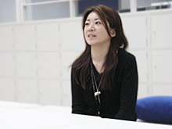

「クリエイターズ インタビュー」 第11回目は、
『ソニックと秘密のリング』メインプランナーの岸本 守央と、プランナーの須永 江身子を紹介！
プロフィール：
岸本 守央（きしもと もりお） 2005年サミーよりセガへ転籍
セガ/第一ＧＥ研究開発部/プランニングセクション
これまで業務用ビデオゲーム開発一筋。開発メーカーを渡り歩き、縁あってセガへ。
『ソニックと秘密のリング』が自身初のコンシューマタイトル。
須永 江身子（すなが えみこ） 2000年セガ入社
セガ/第一ＧＥ研究開発部/プランニングセクション
過去に参加した作品は『スペースチャンネル5パート2』『きみのためなら死ねる』『赤ちゃんはどこからくるの』
今回は、3月15日に発売予定の『ソニックと秘密のリング』メインプランナーの
岸本 守央さんと、プランナーの須永 江身子さんにお話しを伺いたいと思います。
まず、それぞれどのようなお仕事を担当されていたか、ご説明いただけますでしょうか？
岸本：
ゲームデザインとしての担当箇所は、プレイヤーのアクション周りとレベルデザイン（ゲームのテンポ、遊び方、難易度調整など）の監修。あとは細かくエネミーだとか色々ですが、主にメインプランナーとして、他のプランナーの意見をチーム全体のデザイナーやプログラマーにうまく流すまとめ役としても動き回っていました。
須永：
私はプランナーとして、ゲーム内のステージ仕様を作りました。担当したステージは、「イビルファウンドリー」「パイレーツストーム」の2つです。が、今回は作り方が少し変わっていて、ステージ仕様を作った人とレベルデザインの調整をした人が違うので、最終的には、複数のプランナーでこれらのステージを手がけています。
プランナーとしての仕事は多岐に渡るのですが、主なところではゲームの美術設定などが鑑賞できる「スペシャルブックモード」や、サウンド全般を担当して、サウンドディレクターと、各ステージのＢＧＭや効果音のイメージについてのやりとりを行っていました。
岸本さん、須永さんはどういう経緯で『ソニックと秘密のリング』を手掛けることになったのでしょうか？
岸本：
以前はサミーに勤めていたのですが、セガサミーホールディングスが設立することになって、セガに行きたい人は面談をセガでやりますよーという話がでまして。
サミーでビデオゲームの制作をしていたのですが、今後はビデオゲームに関してはセガに移行するという話があって。僕はビデオゲームを作りたいので、それじゃあセガのほうに話を聞きにいこうと思い、アーケードゲームのお話を聞かせていただきました。
でも、その時のアミューズメント施設では、タッチパネルを使ったサテライトタイプのゲームや、メダルゲームなどが主流になっていましてね。レバーとボタンを駆使して、どれだけ遊ぶことができるか、というような純粋なビデオゲームというものはあまり置かなくなっていたのです。
僕には「ビデオゲームが作りたい！」という揺ぎ無い信念があったので、その後、家庭用ゲームのほうにお話を聞きに行きました。実は僕の中で“ソニック“というのは特別な存在だったんです。
ここＧＥ1（第一ＧＥ研究開発部）に来れば、いつかソニックに関われるチャンスがくるかも知れない！と思って、ＧＥ1でお世話になることに決めました。
そうしたら、入ってすぐソニックのタイトルを担当することになりまして。一本目から触れることができるなんて夢にも思ってなかったので、ものすごくうれしかったです。
須永：
今までは『きみのためなら死ねる』『赤ちゃんはどこからくるの？』などを作っていました。私自身、今度は全く違うジャンルのプロジェクトに携わってみたいと思い、部内で相談したところ、Wiiでソニックを作るプロジェクトが立ち上がるからそれをやろうという話になり、本作に参加させていただくことになりました。
ソニックでは、初めての「Wii」作品！
新世代ハードを選んだことでのご苦労も多かったと思うのですが、開発のほうはいかがだったでしょうか？
岸本：
セガ全体の意向として、Wii本体の発売日の付近にソニックタイトルを発売するというのがありました。Wii発売から遅くとも2～3ヶ月以内で発売せよと。開発のメンバーを集めながら、開発の期限が決まっていたので、まずはWiiリモコンをどう使ってソニックを遊んでもらうか、これが最初の大きなハードルになりました。
最終的にリモコンは横に持つことになったのですが、最初は片手で縦に持ったりしていたんです。あと、操作に関しても何パターンもテストして、どうやって遊んでもらうかはプロジェクト中盤まで色々試していましたね。
スピードブレイクやタイムブレイクの発動の方法も、本当はボタンを増やしたくなかったので、開発の最後の最後まで実験して調整していました。
須永：
プログラマーはそのたびに、「また変えるのー？！」と大変でしたが、毎回岸本さんが熱意で押し切っていました。担当プログラマーと、とくとくと話をして、意見を戦わせ。操作の面では本当によく白熱した意見交換をしていましたね。
岸本：
いままでのソニックとは操作のプレイ感が違うんです。
今回のプロジェクトで一緒になったプログラマーのメンバー達は、“ソニックはこうあるべき”という強い信念、思想をみんな持ってたので、今までの3Ｄのソニックのゲームと異なるプレイ感に変更することに対して、色々意見が激突しました。
でも私は、ソニックチームで「それを変えたい」と思っていたんです。
「ソニックとはなんぞや？」と、根本からソニックと言うものをみつめなおした上で、今回の企画でこういうチェンジをしていきたいんだ！！と。僕のほうであまりに今までにない試みを提案していくので、至るところで何かにつけて正面衝突がありましたけどね。
でも、「とりあえず試して頂戴！ ダメだったらやめるから、とりあえず試してお願いっ！」と、お願いし倒してきました。
で、プログラマーに実装してもらった結果、具合が悪いとまた次の方法を考えて、と…
それがまた大変なのですけど（笑）。
須永：
岸本さんのそんな姿を間近で見てきて、大いに学ぶものがありました！